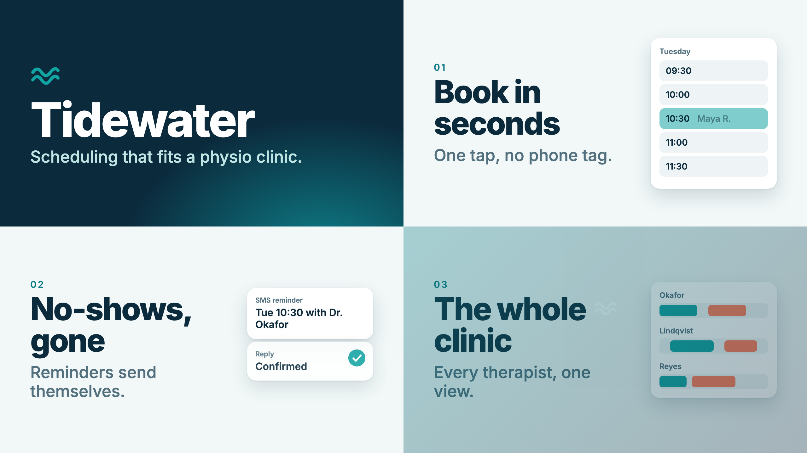

Output

Result
Delivered a real 6.0 s, 1280x720, 30 fps H.264 MP4 (464 kB) rendered with 'npx remotion render' from a Remotion 4.0.537 project scaffolded with create-video. Structure: title (Tidewater logo, wordmark, tagline), three feature beats (Book in seconds / No-shows, gone / The whole clinic, each with a small animated UI card), and an end card ('Try Tidewater free'). Scenes are separate components joined by one TransitionSeries (fade, slide, slide, fade; 5 scenes totalling 204 frames minus 4 x 6 transition frames = 180). All motion is interpolate() + Easing.bezier on the frame (no CSS transitions), written inline on Interactive.Div nodes with scale/translate shorthands. Text sizes follow the skill's video-layout rule scaled to 1280 px wide (headline 100 px, supporting 52 px, 96 px side safe area). Verified by rendering stills with 'render --frames' (contact sheet attached), then the full video, then ffprobe. Studio was started with --no-open on port 7151 per the skill and served HTTP 200; the in-app browser was not opened. Note: the CLI render server defaults to port 3000, which was occupied by an unrelated app here, so renders needed --port=7152. Remotion's own Chrome download worked; no --browser-executable was needed.
Terminal
# Skill: scaffold into a new subfolder (folder non-empty rules)
npx create-video@latest --yes --blank --no-tailwind tidewater
Copied to tidewater.
Get started by running:
cd tidewater
npm run dev
To render a video, run:
npx remotion render
# Skill: install @remotion/* with the matching version
npx remotion add @remotion/transitions @remotion/google-fonts
Installing 2 packages (@remotion/transitions, @remotion/google-fonts)
$ npm i --save-exact ... @remotion/transitions@4.0.537 @remotion/google-fonts@4.0.537
added 3 packages in 25s
+ @remotion/transitions@4.0.537
+ @remotion/google-fonts@4.0.537
# Skill: open the preview before building the composition
npx remotion studio --no-open --port=7151 && curl -s -o /dev/null -w '%{http_code}' localhost:7151
Server ready - Local: http://localhost:7151, Network: http://172.20.10.2:7151
Building...
Built in 545ms
200
# Typecheck after writing src/Scenes.tsx, src/Tidewater.tsx, src/Root.tsx
npx tsc --noEmit
(no output, 0 errors)
# First attempt (skill: inspect frames with render --frames)
npx remotion render Tidewater out/frames --frames=30,60,100,140,175 --image-format=png
Error: Error while getting compositions: Tried to go to http://localhost:3000/index.html and verify that it is a Remotion project ... However, the function was undefined, which indicates that this is not a valid Remotion project.
Does this look like a foreign page? If so, try to stop this server.
# Port 3000 is taken by another app on this machine; use a free port from the assigned range
npx remotion render Tidewater out/frames --frames=30,60,100,140,175 --image-format=png --port=7152
Composition Tidewater
Codec h264
Output out/frames
Concurrency 5x
Rendered 1/5 ... Rendered 5/5
+ out/frames
# Contact sheet to check layout, sizes and safe area; looked correct, no changes needed
ffmpeg -i element-030.png -i element-060.png -i element-100.png -i element-140.png -filter_complex '[0][1]hstack[a];[2][3]hstack[b];[a][b]vstack' sheet.png
ok
# Final render
npx remotion render Tidewater out/video-1.mp4 --port=7152
Rendered 179/180, time remaining: 0s
Encoded 83/180
Encoded 144/180
Encoded 180/180
+ out/video-1.mp4 464.3 kB
# Verify spec
ffprobe -v error -show_entries stream=codec_name,width,height,r_frame_rate,duration -of default=nw=1 out/video-1.mp4
codec_name=h264
width=1280
height=720
r_frame_rate=30/1
duration=6.000000
Files
src/Root.tsx
import { Composition } from class="s">"remotion"; import { Tidewater } from class="s">"./Tidewater"; export const RemotionRoot: React.FC = () => { return ( <Composition id=class="s">"Tidewater" component={Tidewater} durationInFrames={180} fps={30} width={1280} height={720} /> ); };
src/Tidewater.tsx
import { linearTiming, TransitionSeries } from class="s">"@remotion/transitions"; import { fade } from class="s">"@remotion/transitions/fade"; import { slide } from class="s">"@remotion/transitions/slide"; import { BookingBeat, ClinicBeat, EndCard, RemindersBeat, TitleScene, } from class="s">"./Scenes"; // 5 scenes (42+40+40+40+42 = 204 frames) minus 4 transitions of 6 frames = 180 frames = 6s @ 30fps. export const Tidewater: React.FC = () => ( <TransitionSeries> <TransitionSeries.Sequence name=class="s">"Title" durationInFrames={42}> <TitleScene /> </TransitionSeries.Sequence> <TransitionSeries.Transition presentation={fade()} timing={linearTiming({ durationInFrames: 6 })} /> <TransitionSeries.Sequence name=class="s">"Beat 1 - Booking" durationInFrames={40}> <BookingBeat /> </TransitionSeries.Sequence> <TransitionSeries.Transition presentation={slide({ direction: class="s">"from-right" })} timing={linearTiming({ durationInFrames: 6 })} /> <TransitionSeries.Sequence name=class="s">"Beat 2 - Reminders" durationInFrames={40}> <RemindersBeat /> </TransitionSeries.Sequence> <TransitionSeries.Transition presentation={slide({ direction: class="s">"from-right" })} timing={linearTiming({ durationInFrames: 6 })} /> <TransitionSeries.Sequence name=class="s">"Beat 3 - Clinic" durationInFrames={40}> <ClinicBeat /> </TransitionSeries.Sequence> <TransitionSeries.Transition presentation={fade()} timing={linearTiming({ durationInFrames: 6 })} /> <TransitionSeries.Sequence name=class="s">"End card" durationInFrames={42}> <EndCard /> </TransitionSeries.Sequence> </TransitionSeries> );
src/Scenes.tsx
import { loadFont } from class="s">"@remotion/google-fonts/Inter"; import type React from class="s">"react"; import { AbsoluteFill, Easing, Interactive, interpolate, useCurrentFrame, useVideoConfig, } from class="s">"remotion"; const { fontFamily } = loadFont(class="s">"normal", { weights: [class="s">"500", class="s">"600", class="s">"800"], subsets: [class="s">"latin"], }); export const COLORS = { navy: class="s">"#0B2A3C", teal: class="s">"#12A3A3", tealDark: class="s">"#0E7C86", mist: class="s">"#F2F8F8", ink: class="s">"#0B2A3C", muted: class="s">"#52707E", coral: class="s">"#FF7A59", }; // Safe area, scaled from the 1080px-wide guidance (80px sides) to 1280px wide. const SIDE = 96; // Headline/supporting minimums scaled from 84px/44px at 1080 wide. const HEADLINE = 100; const SUPPORT = 52; const ease = Easing.bezier(0.16, 1, 0.3, 1); const clamp = { extrapolateLeft: class="s">"clamp", extrapolateRight: class="s">"clamp" } as const; const Logo: React.FC<{ size: number; color: string }> = ({ size, color }) => ( <svg width={size} height={size} viewBox=class="s">"0 0 48 48" fill=class="s">"none"> <path d=class="s">"M4 20c5-7 9-7 14 0s9 7 14 0 9-7 12-3M4 32c5-7 9-7 14 0s9 7 14 0 9-7 12-3" stroke={color} strokeWidth=class="s">"5" strokeLinecap=class="s">"round" /> </svg> ); export const TitleScene: React.FC = () => { const frame = useCurrentFrame(); const { fps } = useVideoConfig(); return ( <AbsoluteFill style={{ background: class="s">`radial-gradient(900px 600px at 80% 110%, ${COLORS.tealDark} 0%, ${COLORS.navy} 70%)`, fontFamily, color: class="s">"white", justifyContent: class="s">"center", padding: class="s">`0 ${SIDE}px`, }} > <Interactive.Div name=class="s">"Logo" style={{ opacity: interpolate(frame, [0, 0.5 * fps], [0, 1], clamp), scale: interpolate(frame, [0, 0.7 * fps], [0.6, 1], { ...clamp, easing: ease, output: class="s">"perceptual-scale", }), transformOrigin: class="s">"left center", }} > <Logo size={96} color={COLORS.teal} /> </Interactive.Div> <Interactive.Div name=class="s">"Title" style={{ fontSize: 150, fontWeight: 800, letterSpacing: -5, lineHeight: 1.05, marginTop: 12, opacity: interpolate(frame, [4, 0.6 * fps], [0, 1], clamp), translate: interpolate(frame, [4, 0.9 * fps], [class="s">"0px 40px", class="s">"0px 0px"], { ...clamp, easing: ease, }), }} > Tidewater </Interactive.Div> <Interactive.Div name=class="s">"Tagline" style={{ fontSize: SUPPORT, fontWeight: 500, color: class="s">"#BFE4E4", marginTop: 8, opacity: interpolate(frame, [14, 0.9 * fps], [0, 1], clamp), translate: interpolate(frame, [14, 1.1 * fps], [class="s">"0px 30px", class="s">"0px 0px"], { ...clamp, easing: ease, }), }} > Scheduling that fits a physio clinic. </Interactive.Div> </AbsoluteFill> ); }; type BeatProps = { readonly index: string; readonly headline: string; readonly support: string; readonly children: (p: { frame: number; fps: number }) => React.ReactNode; }; const Beat: React.FC<BeatProps> = ({ index, headline, support, children }) => { const frame = useCurrentFrame(); const { fps } = useVideoConfig(); return ( <AbsoluteFill style={{ background: COLORS.mist, fontFamily, color: COLORS.ink, flexDirection: class="s">"row", alignItems: class="s">"center", padding: class="s">`0 ${SIDE}px`, }} > <div style={{ width: 600, display: class="s">"flex", flexDirection: class="s">"column" }}> <Interactive.Div name=class="s">"Index" style={{ fontSize: 30, fontWeight: 600, color: COLORS.tealDark, letterSpacing: 4, opacity: interpolate(frame, [0, 10], [0, 1], clamp), }} > {index} </Interactive.Div> <Interactive.Div name=class="s">"Headline" style={{ fontSize: HEADLINE, fontWeight: 800, letterSpacing: -3.5, lineHeight: 1.0, marginTop: 10, whiteSpace: class="s">"pre-line", opacity: interpolate(frame, [2, 0.5 * fps], [0, 1], clamp), translate: interpolate(frame, [2, 0.8 * fps], [class="s">"0px 36px", class="s">"0px 0px"], { ...clamp, easing: ease, }), }} > {headline} </Interactive.Div> <Interactive.Div name=class="s">"Supporting text" style={{ fontSize: SUPPORT, fontWeight: 500, color: COLORS.muted, lineHeight: 1.15, marginTop: 22, opacity: interpolate(frame, [8, 0.7 * fps], [0, 1], clamp), translate: interpolate(frame, [8, 1 * fps], [class="s">"0px 28px", class="s">"0px 0px"], { ...clamp, easing: ease, }), }} > {support} </Interactive.Div> </div> <div style={{ flex: 1, display: class="s">"flex", justifyContent: class="s">"flex-end" }}> {children({ frame, fps })} </div> </AbsoluteFill> ); }; const card: React.CSSProperties = { background: class="s">"white", borderRadius: 28, boxShadow: class="s">"0 24px 60px rgba(11,42,60,0.16), 0 2px 6px rgba(11,42,60,0.08)", }; export const BookingBeat: React.FC = () => { const slots = [class="s">"09:30", class="s">"10:00", class="s">"10:30", class="s">"11:00", class="s">"11:30"]; return ( <Beat index=class="s">"01" headline={class="s">"Book in\nseconds"} support=class="s">"One tap, no phone tag." > {({ frame, fps }) => ( <Interactive.Div name=class="s">"Booking card" style={{ ...card, width: 400, padding: 28, opacity: interpolate(frame, [4, 0.6 * fps], [0, 1], clamp), translate: interpolate(frame, [4, 1 * fps], [class="s">"60px 0px", class="s">"0px 0px"], { ...clamp, easing: ease, }), }} > <div style={{ fontSize: 24, fontWeight: 600, color: COLORS.muted, marginBottom: 14 }}> Tuesday </div> {slots.map((t, i) => { const picked = i === 2; const fill = interpolate(frame, [20, 28], [0, 1], clamp); return ( <div key={t} style={{ display: class="s">"flex", alignItems: class="s">"center", height: 66, borderRadius: 16, marginBottom: 10, padding: class="s">"0 20px", fontSize: 28, fontWeight: 600, background: picked ? class="s">`rgba(18,163,163,${0.08 + 0.92 * fill})` : class="s">"#EEF4F5", color: picked && fill > 0.5 ? class="s">"white" : COLORS.ink, }} > <span style={{ width: 100 }}>{t}</span> {picked && ( <span style={{ opacity: fill, fontWeight: 500 }}>Maya R.</span> )} </div> ); })} </Interactive.Div> )} </Beat> ); }; export const RemindersBeat: React.FC = () => ( <Beat index=class="s">"02" headline={class="s">"No-shows,\ngone"} support=class="s">"Reminders send themselves."> {({ frame, fps }) => ( <div style={{ width: 400, position: class="s">"relative", height: 330 }}> {[0, 1].map((i) => ( <Interactive.Div key={i} name={i === 0 ? class="s">"SMS card" : class="s">"Confirmed card"} style={{ ...card, position: class="s">"absolute", left: 0, right: 0, top: i * 170, padding: 26, opacity: interpolate(frame, [6 + i * 12, 20 + i * 12], [0, 1], clamp), translate: interpolate( frame, [6 + i * 12, 0.9 * fps + i * 12], [class="s">"0px 50px", class="s">"0px 0px"], { ...clamp, easing: ease }, ), }} > <div style={{ fontSize: 22, fontWeight: 600, color: COLORS.muted }}> {i === 0 ? class="s">"SMS reminder" : class="s">"Reply"} </div> <div style={{ fontSize: 32, fontWeight: 600, marginTop: 8, lineHeight: 1.2 }}> {i === 0 ? class="s">"Tue 10:30 with Dr. Okafor" : class="s">"Confirmed"} </div> {i === 1 && ( <div style={{ position: class="s">"absolute", right: 26, top: 26, width: 52, height: 52, borderRadius: 26, background: COLORS.teal, scale: interpolate(frame, [26, 34], [0, 1], { ...clamp, easing: Easing.bezier(0.34, 1.56, 0.64, 1), output: class="s">"perceptual-scale", }), }} > <svg width=class="s">"52" height=class="s">"52" viewBox=class="s">"0 0 52 52" fill=class="s">"none"> <path d=class="s">"M15 27l8 8 15-17" stroke=class="s">"white" strokeWidth=class="s">"5" strokeLinecap=class="s">"round" strokeLinejoin=class="s">"round" /> </svg> </div> )} </Interactive.Div> ))} </div> )} </Beat> ); export const ClinicBeat: React.FC = () => { const lanes = [ { n: class="s">"Okafor", bars: [[0, 0.35], [0.45, 0.8]] }, { n: class="s">"Lindqvist", bars: [[0.1, 0.5], [0.6, 0.9]] }, { n: class="s">"Reyes", bars: [[0, 0.25], [0.3, 0.7]] }, ]; return ( <Beat index=class="s">"03" headline={class="s">"The whole\nclinic"} support=class="s">"Every therapist, one view."> {({ frame, fps }) => ( <Interactive.Div name=class="s">"Schedule card" style={{ ...card, width: 400, padding: 28, opacity: interpolate(frame, [4, 0.6 * fps], [0, 1], clamp), translate: interpolate(frame, [4, 1 * fps], [class="s">"60px 0px", class="s">"0px 0px"], { ...clamp, easing: ease, }), }} > {lanes.map((l, li) => ( <div key={l.n} style={{ marginBottom: li < 2 ? 26 : 0 }}> <div style={{ fontSize: 24, fontWeight: 600, color: COLORS.muted, marginBottom: 10 }}> {l.n} </div> <div style={{ position: class="s">"relative", height: 48, background: class="s">"#EEF4F5", borderRadius: 14 }}> {l.bars.map(([a, b], bi) => { const start = 10 + li * 4 + bi * 5; const grow = interpolate(frame, [start, start + 14], [0, 1], { ...clamp, easing: ease, }); return ( <div key={bi} style={{ position: class="s">"absolute", top: 6, bottom: 6, left: class="s">`${a * 100}%`, width: class="s">`${(b - a) * 100 * grow}%`, borderRadius: 9, background: bi === 0 ? COLORS.teal : COLORS.coral, }} /> ); })} </div> </div> ))} </Interactive.Div> )} </Beat> ); }; export const EndCard: React.FC = () => { const frame = useCurrentFrame(); const { fps } = useVideoConfig(); return ( <AbsoluteFill style={{ background: class="s">`linear-gradient(135deg, ${COLORS.tealDark}, ${COLORS.navy})`, fontFamily, color: class="s">"white", alignItems: class="s">"center", justifyContent: class="s">"center", }} > <Interactive.Div name=class="s">"End logo" style={{ opacity: interpolate(frame, [0, 12], [0, 1], clamp), scale: interpolate(frame, [0, 0.8 * fps], [0.7, 1], { ...clamp, easing: ease, output: class="s">"perceptual-scale", }), }} > <Logo size={88} color=class="s">"#7FE0E0" /> </Interactive.Div> <Interactive.Div name=class="s">"End title" style={{ fontSize: HEADLINE, fontWeight: 800, letterSpacing: -3.5, marginTop: 6, opacity: interpolate(frame, [4, 0.6 * fps], [0, 1], clamp), translate: interpolate(frame, [4, 0.9 * fps], [class="s">"0px 30px", class="s">"0px 0px"], { ...clamp, easing: ease, }), }} > Try Tidewater free </Interactive.Div> <Interactive.Div name=class="s">"End URL" style={{ fontSize: SUPPORT, fontWeight: 500, color: class="s">"#BFE4E4", marginTop: 10, opacity: interpolate(frame, [14, 0.9 * fps], [0, 1], clamp), }} > tidewater.app </Interactive.Div> </AbsoluteFill> ); };